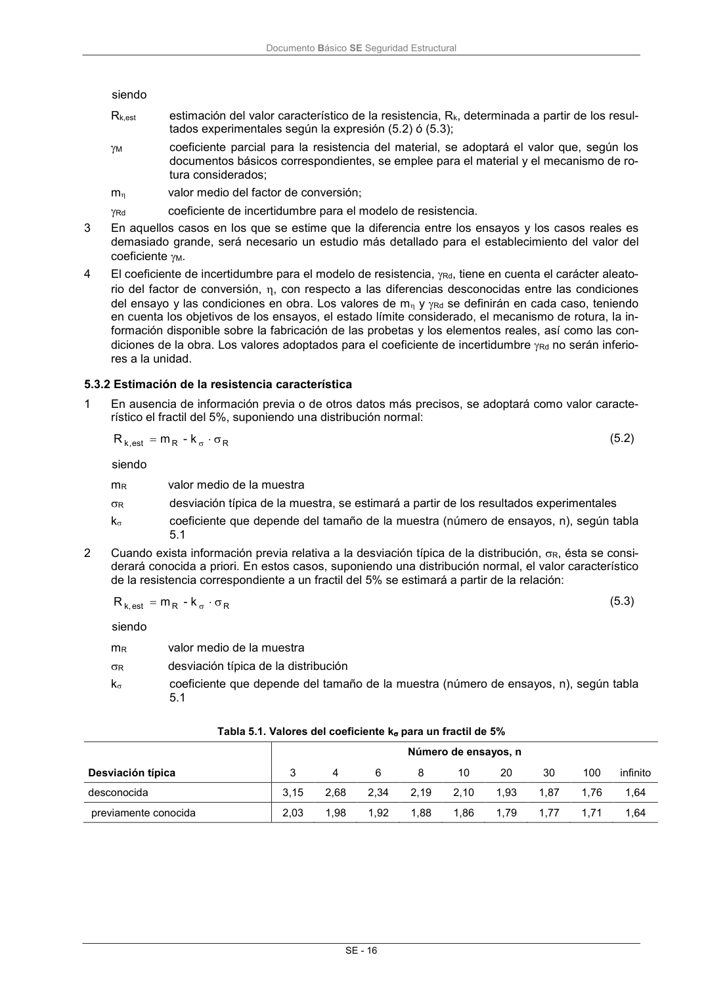

DB-SE · Fragmento de PDF p21 · versión 2019-12-20 · capa oficial
Formatos: JSON compacto · Markdown · PDF fuente
Ámbito del documento · texto del ámbito · documento y tablas
ID técnico a0058 · PDF pág. 21-22 · jerarquía no validada por persona · no es capítulo: sin_linea_de_encabezado · padre: raíz · literal original en el contenido: «5.3 Evaluación de los resultados 5.3.1 Generalidades»
5.3 Evaluación de los resultados 5.3.1 Generalidades 5.3.1 Generalidades 1 La determinación del valor de cálculo de la resistencia de un elemento estructural o de un material mediante ensayos se basa en que la resistencia de la probeta empleada se representa a través de una única variable y en que el tipo de rotura contemplado es determinante en todos los ensayos. 2 El valor de cálculo de la resistencia, Rd, se determinará según la siguiente expresión: Rd M est k, d m R R (5.1) Documento Básico SE Seguridad Estructural SE - 16 siendo Rk,est estimación del valor característico de la resistencia, Rk, determinada a partir de los resul- tados experimentales según la expresión (5.2) ó (5.3); M coeficiente parcial para la resistencia del material, se adoptará el valor que, según los documentos básicos correspondientes, se emplee para el material y el mecanismo de ro- tura considerados; m valor medio del factor de conversión Rd coeficiente de incertidumbre para el modelo de resistencia. 3 En aquellos casos en los que se estime que la diferencia entre los ensayos y los casos reales es demasiado grande, será necesario un estudio más detallado para el establecimiento del valor del coeficiente M. 4 El coeficiente de incertidumbre para el modelo de resistencia, Rd, tiene en cuenta el carácter aleato- rio del factor de conversión, , con respecto a las diferencias desconocidas entre las condiciones del ensayo y las condiciones en obra. Los valores de m y Rd se definirán en cada caso, teniendo en cuenta los objetivos de los ensayos, el estado límite considerado, el mecanismo de rotura, la in- formación disponible sobre la fabricación de las probetas y los elementos reales, así como las con- diciones de la obra. Los valores adoptados para el coeficiente de incertidumbre Rd no serán inferio- res a la unidad.

PDF fuente redistribuible: copia fiel enlazada en esta página (SHA256 verificado).